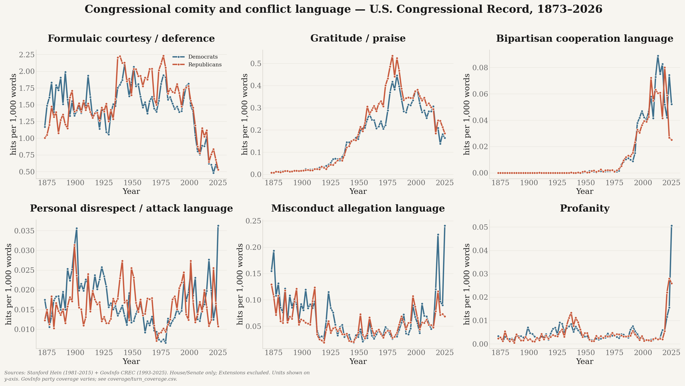

{kind=link}
{kind=link}
What is shown
The charts show monthly Democratic and Republican rates for three separate lexical measures, plus the highest-rate members in Congress 119. Rates are hits per 100,000 attributed spoken words.
How Democratic and Republican language in the Congressional Record has changed, from courtesy and bipartisan cooperation to personal disrespect, misconduct allegations, and profanity.
What is shown: Six separate lexical measures, reported as word-normalized rates for Democrats and Republicans. Positive and negative language remain separate rather than being collapsed into a single score.
What is being examined: Whether congressional courtesy, praise, cooperation, personal attacks, misconduct allegations, and profanity move differently over time and by party.
What the figure suggests: Formal courtesy has declined sharply in recent decades, while cooperation language rose from a low historical base. Conflict measures remain rare but show pronounced recent spikes, especially misconduct allegations and profanity. The source transition and changing coverage mean individual jumps should not be read as causal.

Three transparent lexical measures are shown separately: profanity, personal hostility or disrespect, and misconduct allegations. They describe language in attributed floor remarks and compare Democrats with Republicans; they do not establish intent or whether an allegation is true.
The charts show monthly Democratic and Republican rates for three separate lexical measures, plus the highest-rate members in Congress 119. Rates are hits per 100,000 attributed spoken words.
The trend panels examine how the chamber-wide rates change over time. The member panels compare speakers with at least 25,000 words.
Democrats has the higher aggregate profanity rate (5.2 versus 3.6 per 100,000 words). Mr. McGOVERN has the highest eligible profanity rate at 71.9 per 100,000 words. Democrats has the higher aggregate personal hostility / disrespect rate (3.7 versus 1.4 per 100,000 words). Ms. DUCKWORTH has the highest eligible personal hostility / disrespect rate at 20.2 per 100,000 words. Democrats has the higher aggregate misconduct allegations rate (25.6 versus 8.0 per 100,000 words). Mr. MURPHY has the highest eligible misconduct allegations rate at 149.4 per 100,000 words.
These are descriptive word-pattern counts, not judgments about intent. Misconduct language does not prove misconduct, and quoted profanity is excluded from a speaker's rate.

Unquoted matches from a narrow, curated profanity list. Only members with a nonzero rate and enough words are included.
| # | Member | Party | Chamber | Per 100k | Hits | Words |
|---|---|---|---|---|---|---|
| 1 | Mr. McGOVERN | D | House | 71.9 | 125 | 173,735 |
| 2 | Mr. SCHWEIKERT | R | House | 66.1 | 129 | 195,267 |
| 3 | Mr. SCHATZ | D | Senate | 34.7 | 33 | 95,207 |
| 4 | Ms. DUCKWORTH | D | Senate | 16.8 | 5 | 29,687 |
| 5 | Ms. STANSBURY | D | House | 15.1 | 7 | 46,435 |
| 6 | Ms. SLOTKIN | D | Senate | 14.0 | 4 | 28,649 |
| 7 | Mr. MAST | R | House | 12.7 | 6 | 47,360 |
| 8 | Mr. TUBERVILLE | R | Senate | 12.3 | 8 | 64,938 |
Curated personal attack and disrespect terms. Only members with a nonzero rate and enough words are included.
| # | Member | Party | Chamber | Per 100k | Hits | Words |
|---|---|---|---|---|---|---|
| 1 | Ms. DUCKWORTH | D | Senate | 20.2 | 6 | 29,687 |
| 2 | Mr. WHITEHOUSE | D | Senate | 14.4 | 25 | 173,769 |
| 3 | Mr. MAGAZINER | D | House | 14.3 | 4 | 27,951 |
| 4 | Mr. WICKER | R | Senate | 13.8 | 5 | 36,281 |
| 5 | Mr. TILLIS | R | Senate | 13.6 | 6 | 44,214 |
| 6 | Mr. SCHUMER | D | Senate | 12.7 | 44 | 347,800 |
| 7 | Mr. McGOVERN | D | House | 11.5 | 20 | 173,735 |
| 8 | Mr. WILSON of South Carolina | R | House | 11.4 | 3 | 26,300 |
Curated language alleging corruption, abuse, or other misconduct. Only members with a nonzero rate and enough words are included.
| # | Member | Party | Chamber | Per 100k | Hits | Words |
|---|---|---|---|---|---|---|
| 1 | Mr. MURPHY | D | Senate | 149.4 | 197 | 131,887 |
| 2 | Ms. WARREN | D | Senate | 90.0 | 67 | 74,451 |
| 3 | Mr. KIM | D | Senate | 89.1 | 44 | 49,403 |
| 4 | Mr. SCHIFF | D | Senate | 78.8 | 92 | 116,702 |
| 5 | Mr. SUBRAMANYAM | D | House | 67.9 | 33 | 48,583 |
| 6 | Mr. WHITEHOUSE | D | Senate | 59.3 | 103 | 173,769 |
| 7 | Ms. WATERS | D | House | 56.3 | 31 | 55,108 |
| 8 | Mr. NEGUSE | D | House | 55.3 | 16 | 28,917 |